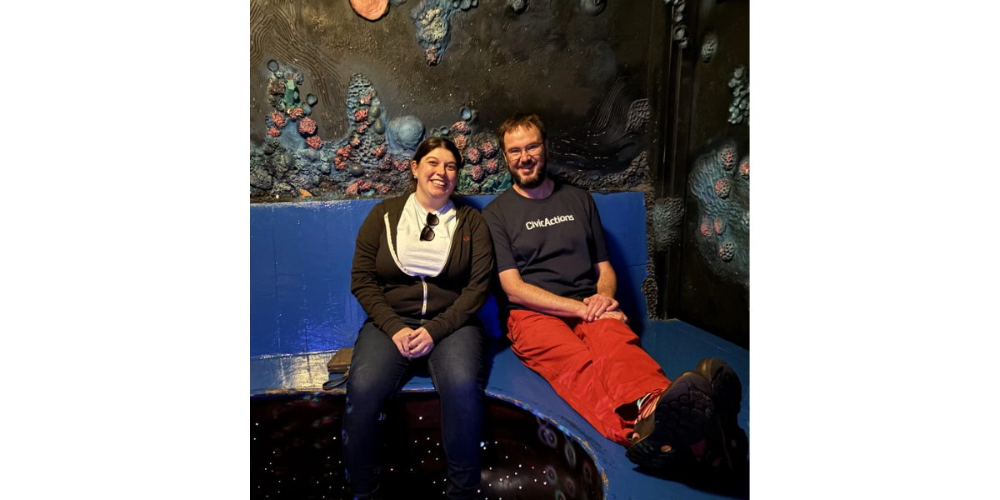
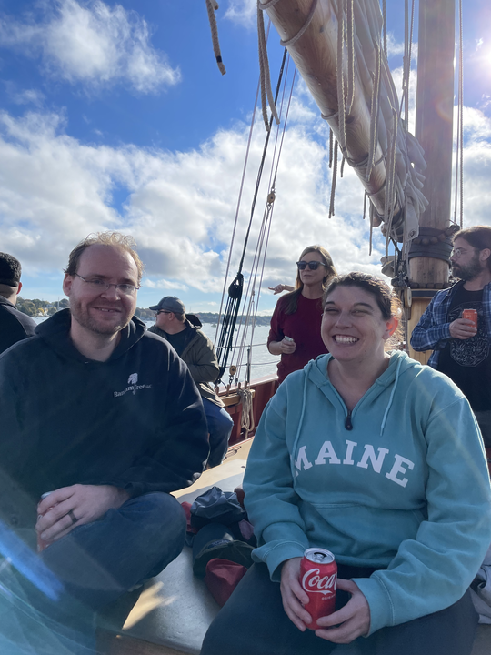
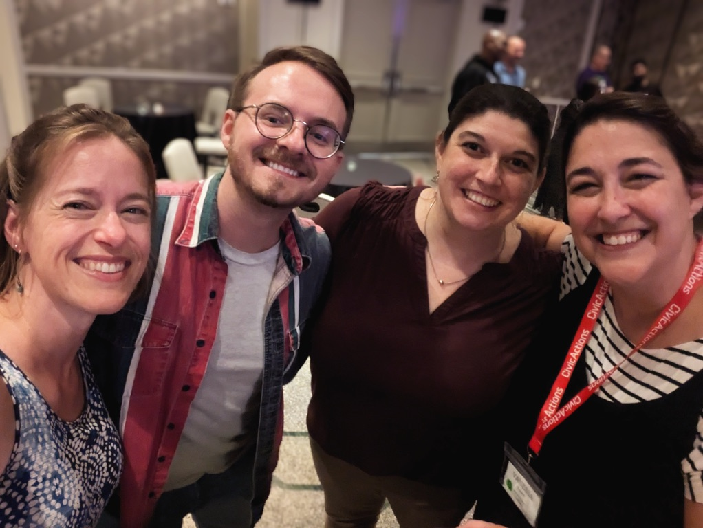
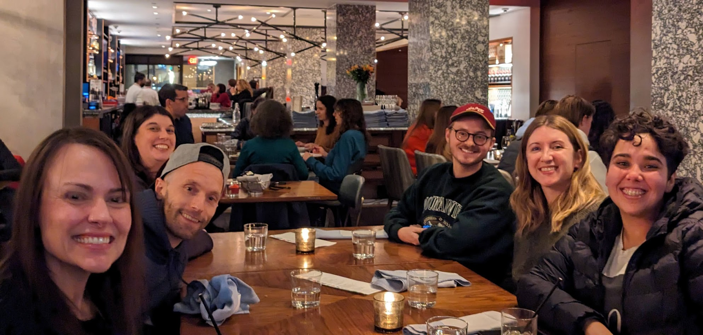

By Maggie Wachs
We honor the memory of our colleague and friend, Laura Flannery, who recently passed away. Laura was a talented Web Accessibility Engineer at CivicActions whose work across multiple Department of Veterans Affairs (VA) programs improved digital services for millions of veterans and their families. As an Accessibility Lead and trusted collaborator, she brought expertise, compassion, and a deep commitment to inclusive design to every project she touched.


Laura was remarkable. She advocated for disabled Veterans with tenacity and an unflagging commitment to quality. She had been working on a project to digitize long, unwieldy paper-based forms that Veterans’ families must fill out to receive needed benefits. She’d also been instrumental in streamlining how content is published to VA.gov and was recognized by the Blinded Veterans Association for her work on website accessibility; in a heartfelt letter, they thanked her personally for removing barriers to necessary online information and resources. In October, she was recognized by the U.S. Digital Response (USDR) as the 2025 Civic Tech Champion for her work with the VA.

And she did all of this with a sense of humor that blended wit and warmth in the way only Bostonians do. She was the person we most looked forward to seeing on Zoom calls. She made work meaningful and fun with irreverent sidebars and well-timed emojis. She appealed to our better selves to meet her high standards, and we loved her for it. She made everyone in her orbit feel like a good, trusted friend.

Laura had an enormous impact on all of us. She will be remembered not just for the work that she did, but for her humor, heart, and genuine care for the people around her. We hope we can honor her by continuing the work she championed, by meeting the standards she set for us, and by remembering the way she made each of us feel inspired. Her legacy lives on in the accessibility standards that she championed, the colleagues she supported, and the countless Veterans whose lives are better because she was here.